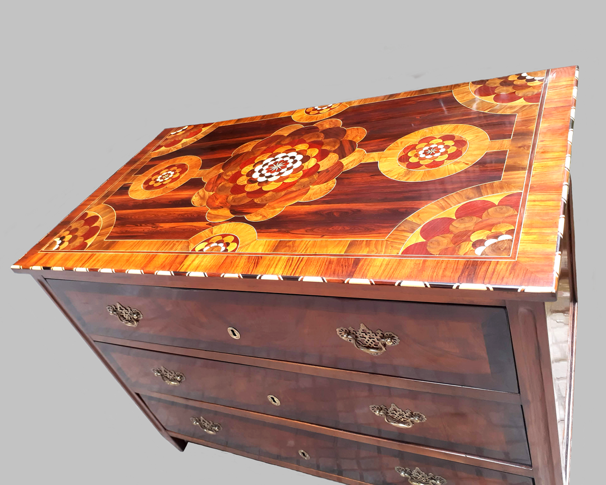
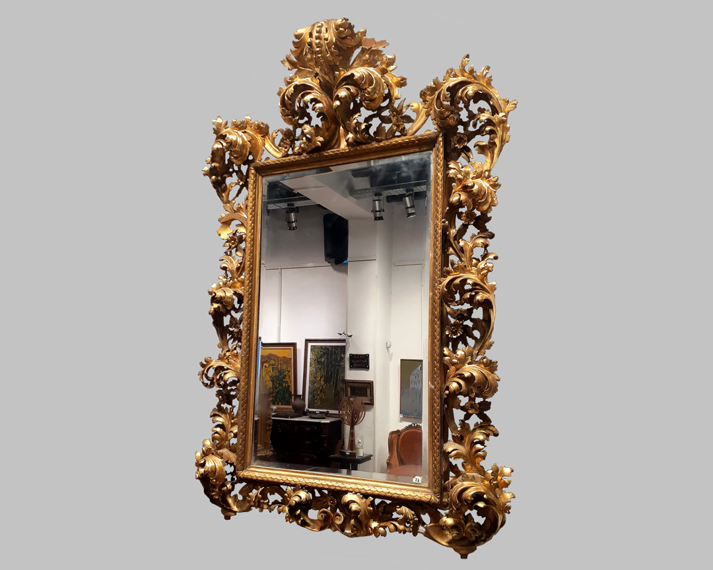
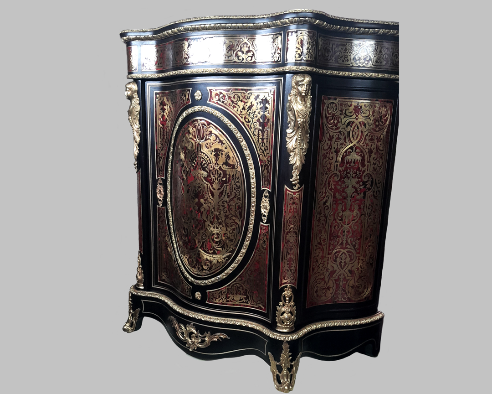
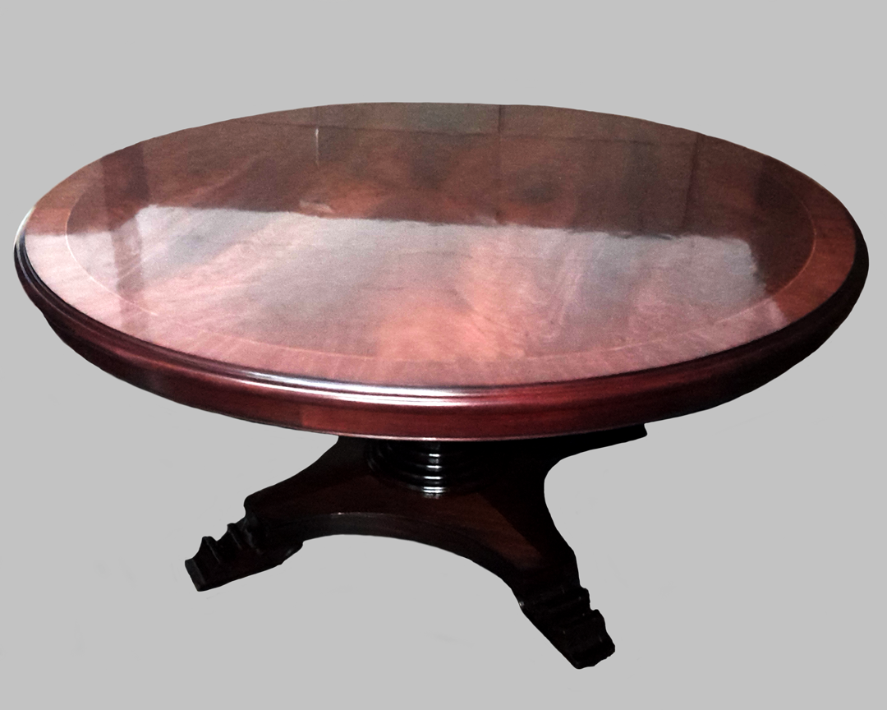
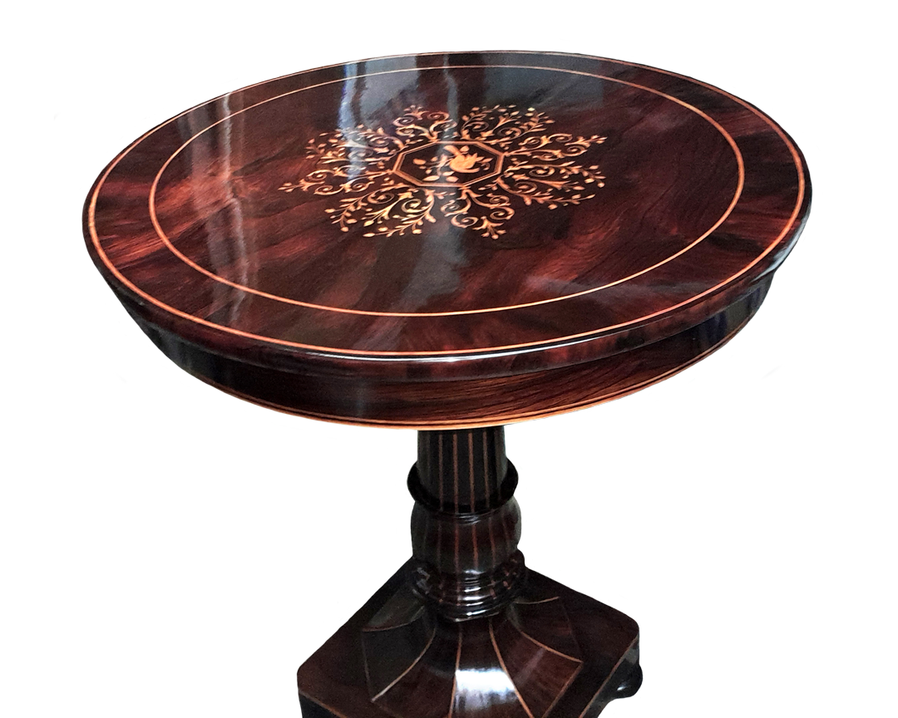
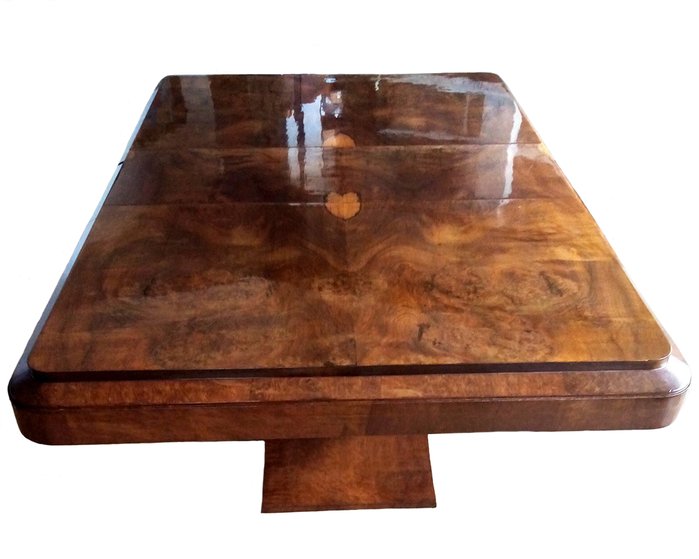
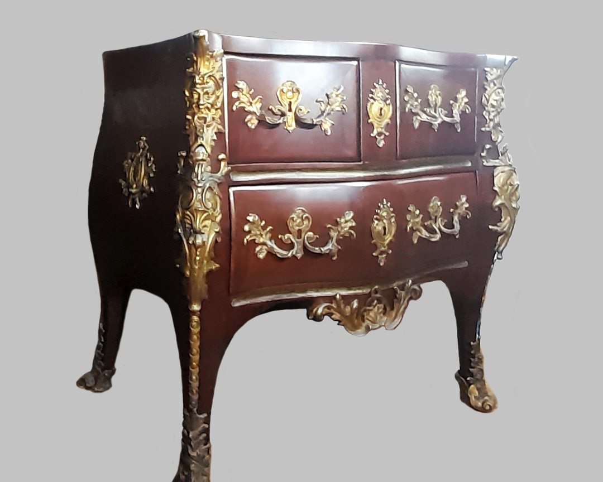
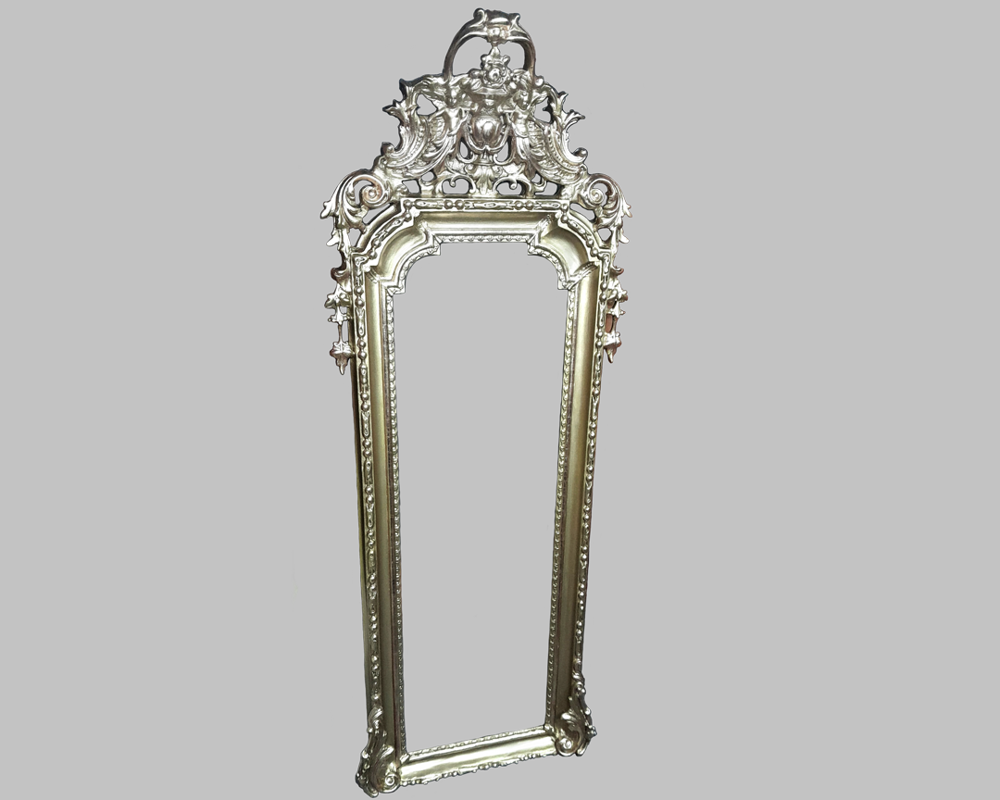

Detrás de cada mueble hay una historia.
En cada restauración, rescatamos la esencia de cada pieza,
preservando su alma y su belleza para que sigan formando
parte de nuevos momentos.Cada mueble tiene una historia. Restauramos su esencia para que siga creando momentos.

Cómoda Austriaca Biedermeier Tardío (s. XIX)
Estructura en madera noble con exquisita marquetería floral en la tapa. Diseño elegante y refinado,
con tiradores de bronce y acabados artesanales. Un testimonio del lujo y la maestría de la época.

Marco de Espejo Estilo Barroco
Espejo de estilo barroco con un marco ricamente ornamentado en madera tallada y dorada.
Decorado con volutas y hojas de acanto en relieve, destaca por su acabado en pan de oro,
realzando su elegancia y sofisticación.

Gabinete Estilo Boulle
Este es un gabinete estilo Boulle, característico por su marquetería en latón y carey
sobre madera negra. Su diseño elegante presenta ornamentación en dorado con patrones
intrincados de inspiración barroca y elementos decorativos con figuras femeninas en
las esquinas. La forma ondulada del mueble, junto con sus detalles tallados y aplicaciones
doradas, refuerza su aire lujoso y refinado, evocando la opulencia del siglo XVII en Francia.

Mesa Estilo Inglés
Mesa de estilo inglés de madera maciza con tapa circular y elegante veta natural.
Base torneada con pie de tres apoyos tallado. Un diseño clásico y refinado ideal
para ambientes elegantes.

Mesa de Jacarandá
Mesa redonda de jacarandá con marquetería en madera clara y un diseño refinado.
Su tablero pulido resalta las vetas oscuras y el elegante motivo central.
El pedestal tallado y la base ornamentada aportan estabilidad y sofisticación,
evocando el estilo clásico de los muebles antiguos.

Mesa de Directorio Art Déco
Elegante mesa de directorio de estilo Art Déco (circa 1920-1940), con un espectacular acabado
en raíz de nogal y un diseño de líneas limpias y bordes redondeados. Su base central maciza
aporta solidez y sofisticación, reflejando la esencia del mobiliario de lujo de la época. Ideal
para espacios con un aire clásico y distinguido.

Cómoda Luis XV
Cómoda de estilo Luis XV con estructura de madera noble y elegantes aplicaciones de bronce dorado.
Sus líneas curvas y ornamentaciones detalladas reflejan la sofisticación del diseño rococó.
Los cajones decorados con motivos florales en bronce aportan un toque de lujo y distinción,
mientras que sus patas cabriolé enfatizan la elegancia característica de la época. Ideal para
espacios que buscan un aire clásico y refinado

Marco de Espejo Estilo Rococó
Espejo antiguo con marco de estilo rococó, restaurado con un acabado dorado
que resalta sus detalles ornamentales. Un toque de elegancia y sofisticación para cualquier espacio
Sobre Nosotros
Vestigio es más que una empresa de restauración;
somos guardianes de historias, dedicados a asegurar que
cada mueble restaurado no solo recupere su esplendor, sino
que continúe siendo un legado para futuras generaciones.
En Vestigio, estamos apasionados por el arte de la
restauración, porque creemos que cada mueble cuenta una
historia única que merece ser preservada y revivida. No se
trata solo de devolver la belleza a una pieza antigua, sino de
honrar las memorias y la tradición que representa,
asegurándonos de que su legado continúe siendo parte de la
vida de nuestros clientes.
En un mundo donde lo nuevo a menudo reemplaza a lo antiguo,
vemos una oportunidad de destacar y valorar lo que ya existe,
lo que tiene alma y carácter. Nos dedicamos a la restauración de
muebles porque creemos en la importancia de mantener viva la
historia, la elegancia y la tradición, ofreciendo a nuestros clientes
la posibilidad de experimentar la belleza de lo clásico con un toque
de refinamiento moderno.
Nuestro objetivo es crear un impacto duradero, donde cada
restauración no solo renueve el aspecto de un mueble, sino que
también refuerce su valor emocional y cultural. A través de nuestro
trabajo, buscamos conectar a las personas con su pasado y su legado,
mientras aseguramos que la integridad de cada pieza se preserve
para las futuras generaciones.